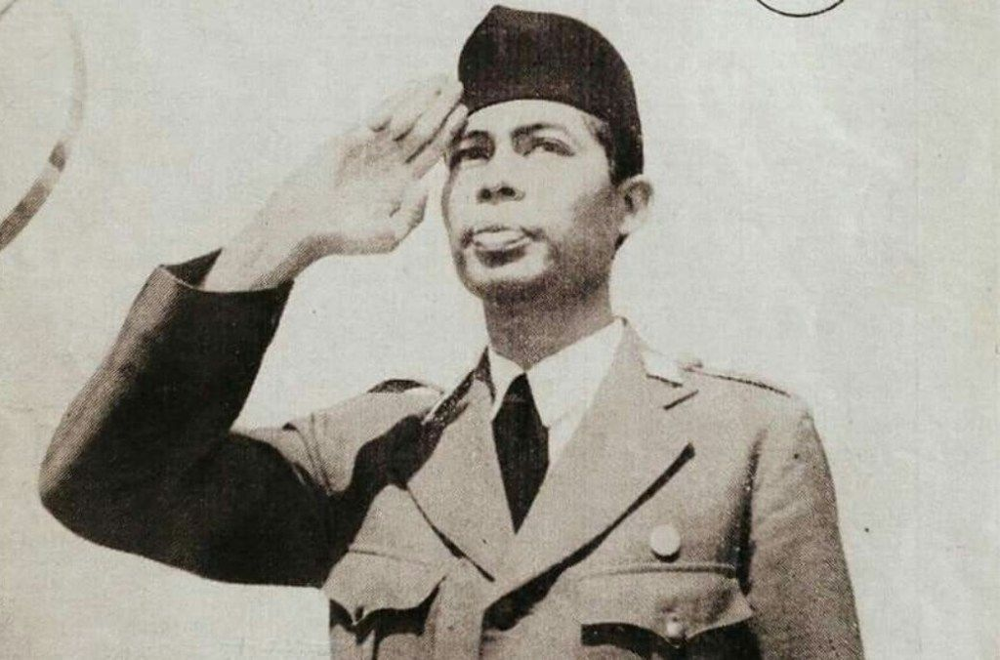

|  |
|
||
|
Revolusi Nasional Indonesia |
Panglima Besar TNI |
Pahlawan Nasional |
|
|
Jenderal Soedirman ialah salah seorang Pahlawan Revolusi Nasional Indonesia. Dalam sejarah perjuangan Republik Indonesia, ia merupakan Panglima dan Jenderal RI yang pertama dan termuda. Pada usia yang masih cukup muda, yaitu 31 tahun, Soedirman telah menjadi seorang jenderal. Selain itu, ia juga dikenal sebagai pejuang yang gigih. Meskipun ia sedang menderita penyakit paru-paru parah, ia tetap berjuang dan bergerilya bersama para prajuritnya untuk melawan tentara Belanda pada Agresi Militer II. |
|||